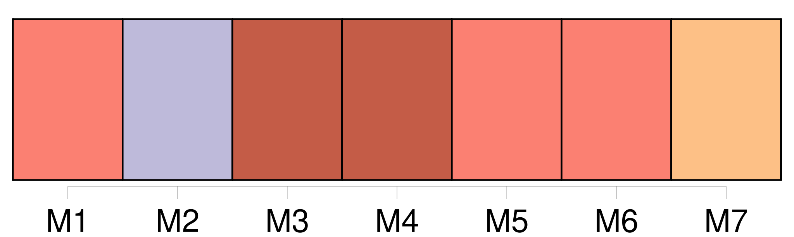

Longueur nb maillons : 16 mentions |
  |
Parmi eux [un grand penseur] : [Léon Brunschwicg] Cachant mieux [son] jeu, avec plus d'as dans [ses] manchettes. Une précision d'horloger des pensées, une adresse relevant de l'art de l'illusionniste faisaient d'abord croire à [un philosophe] : mais on ne trouvait à la fin qu' [un Robert Houdin] [qu'] on pouvait mesurer, de [qui] on pouvait compter les mensonges. [Ce petit revendeur de sophismes] avait un physique de vieux maître d'hôtel autorisé sur le tard à porter ventre et barbe. La ruse sortait du coin de [ses] yeux, guidait dans l'espace gris les courts mouvements de [ses] mains doucereuses de marchand juif lançant avec des clins d'yeux des bons mots comme les décrets de la raison, suggérant à chaque discours : laissez [-moi] faire, tout va s'arranger, [je] répare tout dans les âmes et dans les sciences. [2 phrases] quelle terreur sincère de la vérité qui menace, de celle qui aurait pu par exemple attenter à l'argent de [cet homme riche] !!
Les disciples rangés autour de [lui] se tenaient prêts à relever au-dessus de [son] cadavre le drapeau mercenaire de l'idéalisme critique. |
La ressource peut être téléchargée sur la page Ortolang
Si vous avez des questions ou vous voyez des erreurs, merci d'envoyer un mail à silvia.federzoni89@gmail.com
Site développé par S. Federzoni (contact)